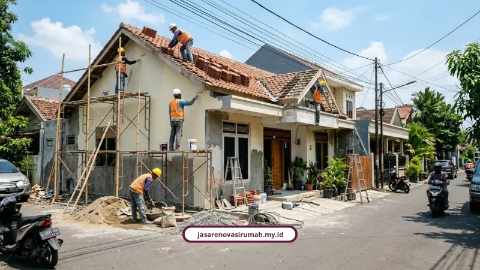

Jasa kontraktor renovasi Surabaya dari kami menyatukan desain dan pelaksanaan dalam satu paket bergaransi resmi, lengkap dengan RAB transparan tanpa biaya siluman. Anda tinggal konsultasi dan survei gratis sebelum menentukan anggaran akhir.
Banyak pemilik rumah di Surabaya yang trauma renovasi. Bukan karena idenya jelek, tapi karena eksekusinya berantakan. Cuaca tropis dengan kelembapan tinggi bikin dinding gampang retak dan cat gampang mengelupas kalau spesifikasinya asal-asalan.
Belum lagi drama klasik: tukang kabur di tengah jalan, biaya membengkak dari rencana awal, atau hasil akhirnya jauh dari gambar yang dijanjikan. Masalah ini biasanya muncul dari satu akar yang sama, yaitu tidak ada perhitungan anggaran yang jelas di depan dan tidak ada kontrak kerja yang mengikat.
Kenapa Renovasi Rumah di Surabaya Sering Meleset dari Rencana?
Saya sering ketemu pemilik rumah di Surabaya yang trauma renovasi. Bukan karena idenya jelek, tapi karena eksekusinya berantakan.
Cuaca tropis dengan kelembapan tinggi bikin dinding gampang retak dan cat gampang mengelupas kalau spesifikasinya asal-asalan. Belum lagi drama klasik: tukang kabur di tengah jalan, biaya membengkak dari rencana awal, atau hasil akhirnya jauh dari gambar yang dijanjikan.
Masalah ini biasanya muncul dari satu akar yang sama, yaitu tidak ada perhitungan anggaran yang jelas di depan dan tidak ada kontrak kerja yang mengikat. Makanya, memilih estimasi RAB renovasi rumah yang realistis dan mitra renovasi yang berpengalaman itu bukan gaya-gayaan, tapi kebutuhan.
Kenapa Harus Pilih Jasa Kami untuk Renovasi di Surabaya?
Kami bukan pemain baru yang coba-coba di industri ini. Berikut beberapa hal yang bikin kami layak dipertimbangkan sebagai solusi desain pelaksanaan bergaransi:
- Berpengalaman lebih dari 12 tahun di industri renovasi dan konstruksi.
- Sudah menyelesaikan 150+ proyek dengan tingkat kepuasan klien 98%.
- Didukung 25+ tim profesional: arsitek, insinyur sipil, desainer interior, sampai tenaga ahli lapangan.
- Punya portofolio nyata renovasi fasad rumah di Surabaya, juga proyek di Malang, Bandung, Jakarta, Yogyakarta, dan Bekasi.
Angka-angka ini bukan pajangan. Ini gambaran bahwa proses kerja kami sudah teruji berkali-kali di lapangan, bukan sekadar janji manis di brosur.
Apa Saja Layanan yang Kami Tawarkan?
Salah satu keluhan paling umum dari klien adalah capek mengurus banyak vendor sekaligus. Arsitek sendiri, tukang sendiri, urus izin sendiri. Ribet dan rawan miskomunikasi.
Kami menjawab itu dengan sistem one-stop solution:
- Jasa Arsitek untuk perencanaan desain yang fungsional, estetik, dan sesuai regulasi perizinan.
- Jasa Kontraktor Rumah untuk pembangunan dan renovasi hunian dengan manajemen proyek terstruktur.
- Jasa Kontraktor Bangunan/Komersial untuk ruko, gedung kantor, dan tempat usaha.
- Jasa Renovasi Bangunan/Gedung, baik perbaikan total maupun parsial.
- Jasa Desain Interior untuk penataan ruang dan pemeliharaan estetika.
- Layanan tambahan berupa konsultasi struktur, pengurusan perizinan PBG/IMB, hingga perawatan pasca-renovasi.
Kalau properti Anda kebetulan berupa ruko atau tempat usaha yang butuh sentuhan lebih spesifik, kami punya pembahasan khusus soal jasa renovasi ruko Surabaya yang membahas fit-out interior dan perbaikan fasad komersial secara detail.
Apa Kata Klien yang Sudah Pakai Jasa Kami?
Saya percaya testimoni jujur lebih berbobot dari klaim sepihak. Berikut beberapa ulasan nyata dari klien kami:
- Ibu Sinta (Surabaya): "Tim arsitek memberi banyak masukan desain yang membuat rumah kami terasa jauh lebih luas dan nyaman."
- Bapak Andi (Malang): "Proses renovasi rumah kami berjalan sangat rapi, komunikasi tim selalu jelas dan hasil akhirnya melebihi ekspektasi."
- Bapak Reza (Bekasi): "Pengerjaan tepat waktu sesuai kontrak dan ada garansi, jadi kami merasa aman menggunakan jasa ini."
Tiga hal yang selalu muncul dari testimoni klien kami adalah komunikasi yang jelas, hasil yang sesuai ekspektasi, dan rasa aman karena ada garansi tertulis.
Kenapa Kontrak Kerja dan Garansi Itu Wajib, Bukan Formalitas?
Ini bukan cuma pendapat kami sendiri. Adizza Irania Insyra dan Noor Fatimah Mediawati, peneliti hukum konstruksi dari Program Studi Hukum Universitas Muhammadiyah Sidoarjo, pernah membahas ini dalam kajian mereka soal UU No. 2 Tahun 2017 tentang Jasa Konstruksi.
Menurut penelitian mereka, banyak kasus kegagalan bangun dan wanprestasi terjadi karena kontrak kerja yang timpang dan tidak mencantumkan sanksi keterlambatan maupun jaminan garansi yang jelas.
Mereka menegaskan bahwa perjanjian kontrak kerja konstruksi yang tegas dan transparan sangat penting untuk melindungi konsumen, dan kontraktor wajib memberikan jaminan perbaikan serta bertanggung jawab penuh terhadap kualitas, keselamatan, dan ketepatan waktu pengerjaan.
Ini alasan kenapa kami selalu memberikan Garansi Pekerjaan Resmi pasca-serah terima kunci, disertai Anggaran Transparan lewat RAB detail tanpa biaya tersembunyi.

Berapa Kisaran Biaya Renovasi Rumah di Surabaya?
Biaya renovasi di Surabaya sangat tergantung skala pekerjaan. Berikut gambaran umumnya per tahun 2026:
- Renovasi ringan (cat ulang, perbaikan plafon, ganti keramik sebagian, atap bocor): upah tukang Rp80.000 sampai Rp150.000 per m2, estimasi total Rp15 juta sampai Rp35 juta untuk tipe 36-45.
- Renovasi sedang (ganti lantai, perbaikan dinding retak, ganti pintu/jendela, tambah kamar mandi): borongan tenaga Rp200.000 sampai Rp350.000 per m2, estimasi total Rp50 juta sampai Rp100 juta untuk tipe 60.
- Renovasi berat/total/tambah lantai (bongkar struktur, rekayasa tata ruang, instalasi listrik dan plumbing ulang): borongan penuh plus material Rp2,5 juta sampai Rp4,5 juta per m2, estimasi total Rp250 juta sampai Rp450 juta lebih untuk luas 100 m2.
Jangan lupa pos biaya yang sering terlewat: jasa desain/arsitek Rp30.000 sampai Rp75.000 per m2, biaya perizinan PBG, biaya bongkar dan buang puing, serta dana cadangan tak terduga sebesar 10 sampai 15 persen dari total anggaran.
Kalau Anda ingin bedah lebih dalam soal simulasi RAB per meter persegi, kami sudah menuliskannya lengkap di estimasi RAB renovasi rumah agar tidak overbudget, dengan contoh perhitungan rumah tipe 36 dan tipe 60 yang lebih aplikatif.
Bagaimana Proses Perizinan PBG untuk Renovasi di Surabaya?
Renovasi yang mengubah struktur atau menambah luas bangunan wajib mengantongi Persetujuan Bangunan Gedung atau PBG. Dokumen yang biasanya dibutuhkan meliputi:
- KTP, KK, NPWP, SHM/Sertifikat Tanah, PBB terakhir, dan SKRK (Surat Keterangan Rencana Kota).
- Gambar arsitektur seperti denah, tampak, potongan, dan site plan.
- Gambar struktur meliputi pondasi, balok, kolom, dan plat lantai.
- Gambar utilitas MEP untuk instalasi air dan listrik.
Semua gambar teknis ini wajib ditandatangani arsitek dan insinyur sipil berlisensi. Aturan teknis Kota Surabaya juga menetapkan Garis Sempadan Bangunan minimal 3 meter dari jalan, Koefisien Dasar Bangunan maksimal 60 persen, dan tinggi bangunan maksimal 3 lantai.
Kami membantu urus semua dokumen ini supaya Anda tidak perlu bolak-balik kantor pemerintahan. Detail alur kerja kami dari survei sampai serah terima kunci sudah kami tulis lengkap di proses kerja renovasi rumah Malang, yang prinsipnya sangat relevan untuk rumah tinggal di Surabaya.
Tren Renovasi Green Living Apa yang Cocok untuk Surabaya?
Surabaya panas, jadi konsep hunian yang mengalirkan udara dan cahaya alami sedang naik daun. Beberapa elemen yang bisa dipertimbangkan:
- Skylight, bukaan jendela besar, dan tanaman indoor untuk efisiensi energi AC dan lampu.
- Material ramah lingkungan seperti rangka galvalum/baja ringan, kayu bersertifikat, semen instan, dan cat rendah emisi VOC.
- Renovasi atap tahan bocor serta pengelolaan drainase dan penampungan air hujan untuk menghadapi iklim tropis.
Kami bisa mengintegrasikan elemen-elemen ini ke dalam desain tanpa mengorbankan fungsi ruang sehari-hari.
Kesimpulan
Renovasi rumah di Surabaya memang penuh jebakan, mulai dari cuaca ekstrim sampai kontraktor yang tidak amanah. Solusinya bukan berharap keberuntungan, tapi memilih mitra kerja yang punya rekam jejak, RAB transparan, dan garansi tertulis di atas kertas.
Kami sudah membuktikan itu lewat 150+ proyek dan kepuasan klien 98 persen selama lebih dari 12 tahun. Kalau Anda sedang mempertimbangkan renovasi, tidak ada salahnya mulai dari konsultasi dan survei gratis.
Silakan hubungi kami lewat WhatsApp di 0889-8964-3555 atau cek langsung halaman layanan kami di https://jasarenovasirumah.my.id/layanan/ untuk melihat cakupan pekerjaan secara lengkap.
FAQ Seputar Jasa Kontraktor Renovasi Surabaya

Naura Regyna Putri
Penulis Profesional & Praktisi Konstruksi
Naura Regyna Putri adalah seorang penulis profesional yang memiliki ketertarikan mendalam pada dunia arsitektur dan konstruksi. Dengan pengalaman bertahun-tahun mengamati tren renovasi rumah, ia aktif membagikan panduan praktis, tips RAB, dan wawasan seputar material bangunan untuk membantu pemilik rumah mewujudkan hunian impian mereka dengan anggaran yang efisien.